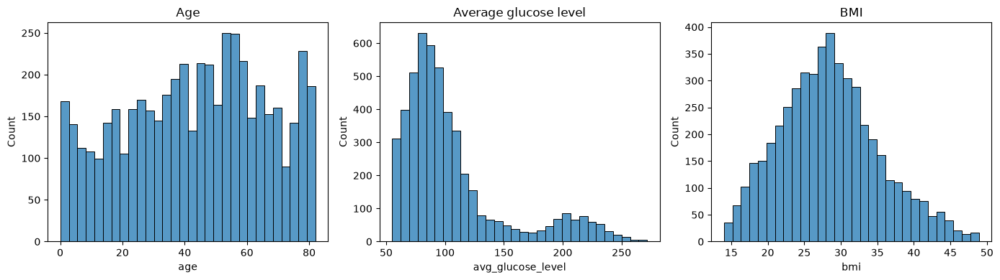
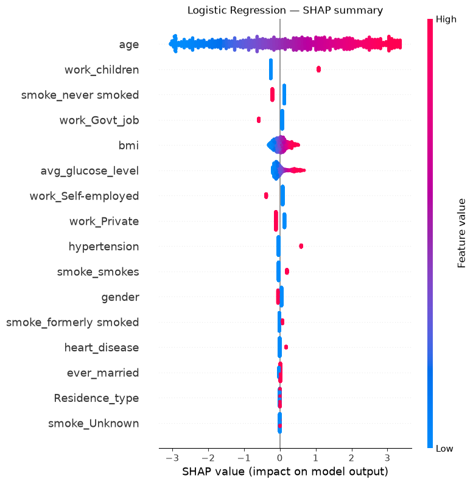
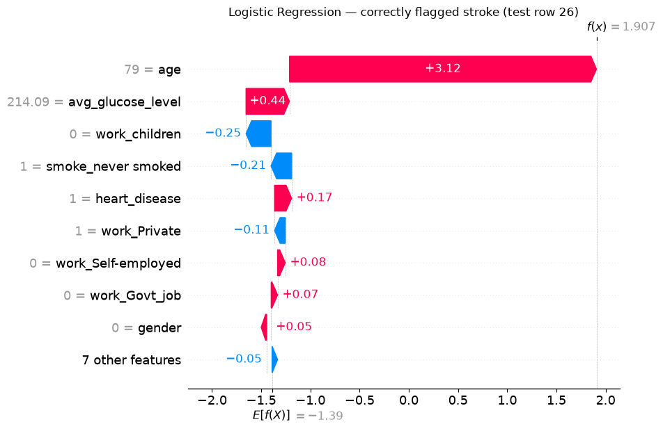
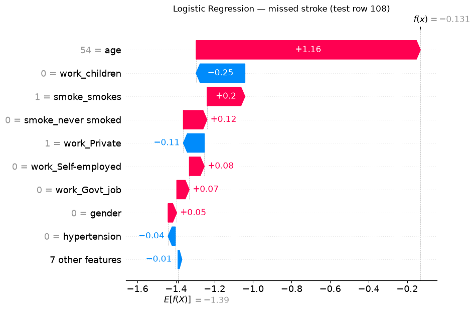
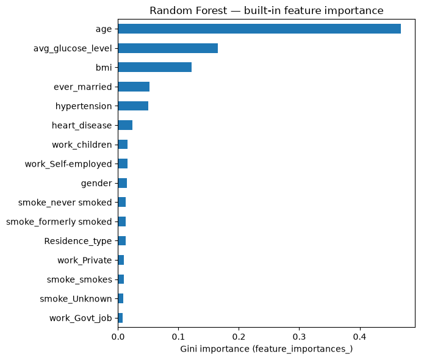
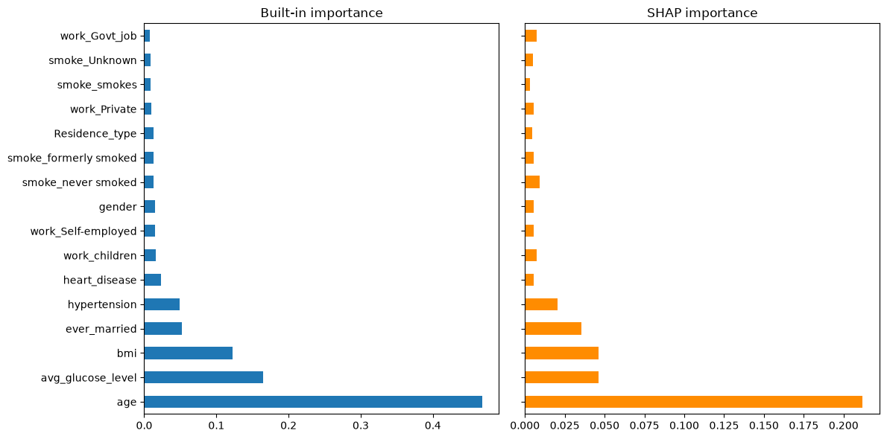
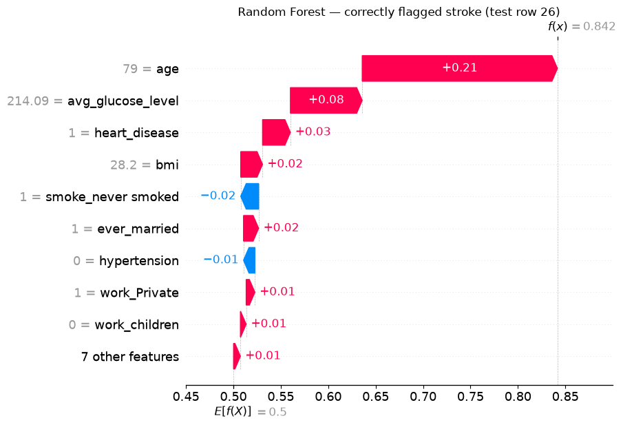
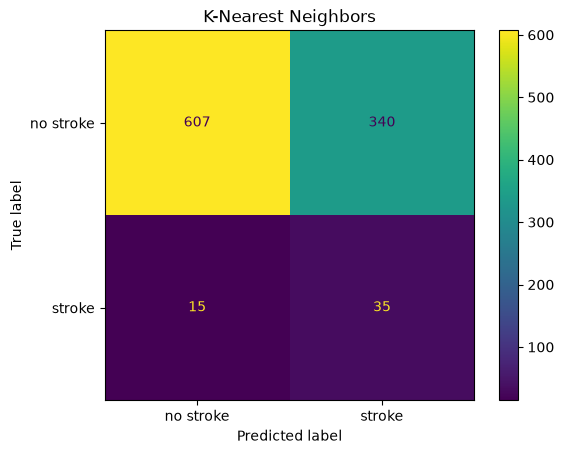
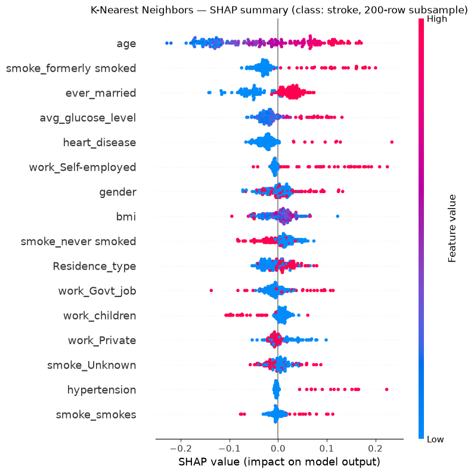
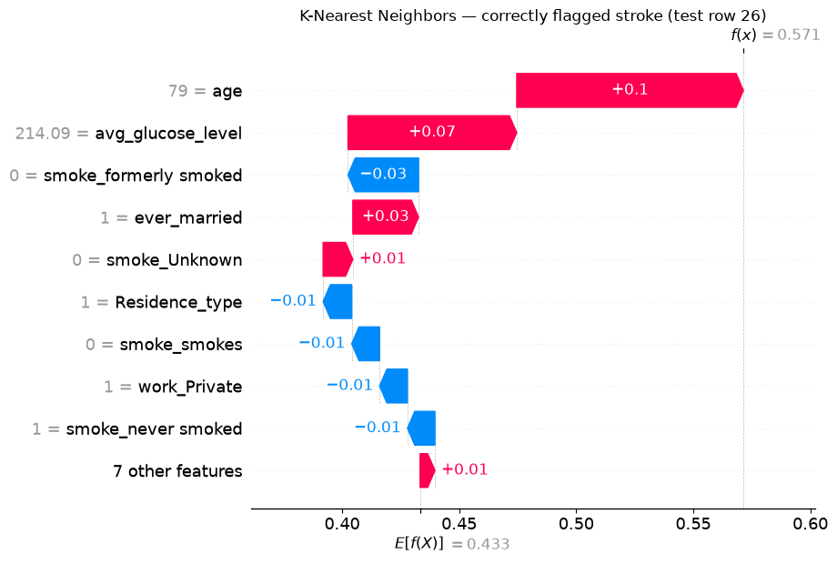

Explainable AI for Stroke Risk Prediction¶
From Simple Models to Post-hoc SHAP Explanations¶
Background¶
This exercise is based on:
Melnykova, N., Patereha, Y., Skopivskyi, S., Farion, M., Fedushko, S. & Drohomyretska, K. (2025). Machine learning for stroke prediction using imbalanced data. Scientific Reports, 15, 33773. https://doi.org/10.1038/s41598-025-01855-w
The paper (paper.pdf in this folder) builds several classifiers: Decision Tree, Random Forest, K-Nearest Neighbors, AdaBoost and Stacking, on a highly imbalanced stroke dataset (4981 patients, ~9:1 no-stroke:stroke ratio) and shows that a SMOTE-balanced Random Forest with tuned hyperparameters gets the best precision/recall/F1 (all ≈ 0.90). It also makes an important methodological point: accuracy is a misleading metric here - a model trained on the raw imbalanced data reaches 96% accuracy while catching zero stroke cases.
What the paper does not do is explain why its models make the predictions they do. That is the gap this exercise fills. Mirroring the paper’s own model line-up, we will train three simple classifiers — Logistic Regression, Random Forest, and K-Nearest Neighbors — instead of its tuned/stacked ensembles. For each one, we immediately follow training with post-hoc SHAP (SHapley Additive exPlanations):
Model 1 - Logistic Regression, then SHAP for Logistic Regression.
Model 2 - Random Forest, then Random Forest’s own built-in explanation, then SHAP for Random Forest.
Model 3 - K-Nearest Neighbors, then SHAP for K-Nearest Neighbors.
Throughout, you’ll find 🤔 Question call-outs. Pause and think about (or discuss with a neighbour) the answer before moving on — there’s no code to fill in, but the exercise is meant to be worked through actively, not just executed top to bottom.
1. Setup¶
import numpy as np
import pandas as pd
import matplotlib.pyplot as plt
import seaborn as sns
from sklearn.model_selection import train_test_split
from sklearn.linear_model import LogisticRegression
from sklearn.ensemble import RandomForestClassifier
from sklearn.neighbors import KNeighborsClassifier
from sklearn.pipeline import make_pipeline
from sklearn.preprocessing import StandardScaler
from sklearn.utils import resample
from sklearn.metrics import (
classification_report,
ConfusionMatrixDisplay,
roc_auc_score,
)
import shap
RANDOM_STATE = 42
2. Load and explore the data¶
df = pd.read_csv("data/data_stroke.csv")
df.shape
(4981, 11)
df.head()
| gender | age | hypertension | heart_disease | ever_married | work_type | Residence_type | avg_glucose_level | bmi | smoking_status | stroke | |
|---|---|---|---|---|---|---|---|---|---|---|---|
| 0 | Male | 67.0 | 0 | 1 | Yes | Private | Urban | 228.69 | 36.6 | formerly smoked | 1 |
| 1 | Male | 80.0 | 0 | 1 | Yes | Private | Rural | 105.92 | 32.5 | never smoked | 1 |
| 2 | Female | 49.0 | 0 | 0 | Yes | Private | Urban | 171.23 | 34.4 | smokes | 1 |
| 3 | Female | 79.0 | 1 | 0 | Yes | Self-employed | Rural | 174.12 | 24.0 | never smoked | 1 |
| 4 | Male | 81.0 | 0 | 0 | Yes | Private | Urban | 186.21 | 29.0 | formerly smoked | 1 |
df.dtypes
gender str
age float64
hypertension int64
heart_disease int64
ever_married str
work_type str
Residence_type str
avg_glucose_level float64
bmi float64
smoking_status str
stroke int64
dtype: object
df.isna().sum()
gender 0
age 0
hypertension 0
heart_disease 0
ever_married 0
work_type 0
Residence_type 0
avg_glucose_level 0
bmi 0
smoking_status 0
stroke 0
dtype: int64
df["stroke"].value_counts(normalize=True).rename("share")
stroke
0 0.950211
1 0.049789
Name: share, dtype: float64
Question 1 — What do you notice about the class balance above? Why can’t we just report “accuracy” for this problem and call it a day? (Think about what accuracy a model would get if it just predicted “no stroke” for every single patient.)
fig, axes = plt.subplots(1, 3, figsize=(14, 4))
sns.histplot(df["age"], ax=axes[0], bins=30)
axes[0].set_title("Age")
sns.histplot(df["avg_glucose_level"], ax=axes[1], bins=30)
axes[1].set_title("Average glucose level")
sns.histplot(df["bmi"], ax=axes[2], bins=30)
axes[2].set_title("BMI")
plt.tight_layout()
plt.show()

numeric_cols = ["age", "hypertension", "heart_disease", "avg_glucose_level", "bmi", "stroke"]
corr = df[numeric_cols].corr(numeric_only=True)
plt.figure(figsize=(6, 5))
sns.heatmap(corr, annot=True, fmt=".2f", cmap="coolwarm", center=0)
plt.title("Correlation with stroke (numeric features only)")
plt.show()

Question 2 - Which features look most correlated with
strokehere? Keep this ranking in mind — we’ll check later whether each model’s SHAP importance (computed from a trained model, not raw correlations) agrees with it.
3. Preprocessing¶
We encode the categorical variables before modeling: a binary 0/1 mapping for two-level features, and one-hot encoding for the multi-level ones (work_type, smoking_status), so all three model types can consume them directly.
data = df.copy()
# Binary categorical -> {0, 1}
data["gender"] = (data["gender"] == "Male").astype(int)
data["ever_married"] = (data["ever_married"] == "Yes").astype(int)
data["Residence_type"] = (data["Residence_type"] == "Urban").astype(int)
# Multi-level categorical -> one-hot
data = pd.get_dummies(data, columns=["work_type", "smoking_status"], prefix=["work", "smoke"])
bool_cols = data.select_dtypes(include="bool").columns
data[bool_cols] = data[bool_cols].astype(int)
data.head()
| gender | age | hypertension | heart_disease | ever_married | Residence_type | avg_glucose_level | bmi | stroke | work_Govt_job | work_Private | work_Self-employed | work_children | smoke_Unknown | smoke_formerly smoked | smoke_never smoked | smoke_smokes | |
|---|---|---|---|---|---|---|---|---|---|---|---|---|---|---|---|---|---|
| 0 | 1 | 67.0 | 0 | 1 | 1 | 1 | 228.69 | 36.6 | 1 | 0 | 1 | 0 | 0 | 0 | 1 | 0 | 0 |
| 1 | 1 | 80.0 | 0 | 1 | 1 | 0 | 105.92 | 32.5 | 1 | 0 | 1 | 0 | 0 | 0 | 0 | 1 | 0 |
| 2 | 0 | 49.0 | 0 | 0 | 1 | 1 | 171.23 | 34.4 | 1 | 0 | 1 | 0 | 0 | 0 | 0 | 0 | 1 |
| 3 | 0 | 79.0 | 1 | 0 | 1 | 0 | 174.12 | 24.0 | 1 | 0 | 0 | 1 | 0 | 0 | 0 | 1 | 0 |
| 4 | 1 | 81.0 | 0 | 0 | 1 | 1 | 186.21 | 29.0 | 1 | 0 | 1 | 0 | 0 | 0 | 1 | 0 | 0 |
X = data.drop(columns=["stroke"])
y = data["stroke"]
X.columns.tolist()
['gender',
'age',
'hypertension',
'heart_disease',
'ever_married',
'Residence_type',
'avg_glucose_level',
'bmi',
'work_Govt_job',
'work_Private',
'work_Self-employed',
'work_children',
'smoke_Unknown',
'smoke_formerly smoked',
'smoke_never smoked',
'smoke_smokes']
Question 3 — One-hot encoding turns
work_type(4 categories) andsmoking_status(4 categories) into 8 separate binary columns. What effect might that have on a feature importance ranking, compared to treatingwork_typeas a single feature? Keep this in mind for later.
X_train, X_test, y_train, y_test = train_test_split(
X, y, test_size=0.2, random_state=RANDOM_STATE, stratify=y
)
X_train.shape, X_test.shape
((3984, 16), (997, 16))
Real-world clinical datasets like this one are usually imbalanced, so each model below handles that imbalance differently — deliberately, since not every model family offers the same knobs.
4. Model 1 - Logistic Regression¶
A linear model is a sensible starting point: it’s fast, and its coefficients are already somewhat interpretable, which will make a good reference point once we bring in SHAP. class_weight="balanced" re-weights the loss so misclassifying the minority (stroke) class costs more.
logreg = LogisticRegression(max_iter=2000, class_weight="balanced", random_state=RANDOM_STATE)
logreg.fit(X_train, y_train)
y_pred_lr = logreg.predict(X_test)
print(classification_report(y_test, y_pred_lr, target_names=["no stroke", "stroke"]))
print("ROC AUC:", roc_auc_score(y_test, logreg.predict_proba(X_test)[:, 1]))
precision recall f1-score support
no stroke 0.99 0.75 0.85 947
stroke 0.15 0.84 0.25 50
accuracy 0.75 997
macro avg 0.57 0.79 0.55 997
weighted avg 0.95 0.75 0.82 997
ROC AUC: 0.841013727560718
ConfusionMatrixDisplay.from_predictions(y_test, y_pred_lr, display_labels=["no stroke", "stroke"])
plt.title("Logistic Regression")
plt.show()
Question 4 - Look at the precision and recall for the “stroke” class specifically.
class_weight="balanced"pushes the model toward one of those two at the expense of the other - which one, and why might a hospital care more about recall than precision for this particular class?
4.1 SHAP for Logistic Regression¶
Both models above and below are already trained before we explain them — post-hoc explainability means explaining decisions after the fact, using only the trained model and data, without changing how the model was built. SHAP (Lundberg & Lee, 2017) assigns every feature, for every individual prediction, a contribution value based on Shapley values from cooperative game theory, such that the contributions sum exactly to (prediction − average prediction). It supports both:
Global explanations — average feature contributions across many patients (what matters overall?).
Local explanations — feature contributions for one specific patient (why this prediction?).
Linear models have an exact, closed-form SHAP algorithm (LinearExplainer) — no sampling or approximation needed.
explainer_lr = shap.LinearExplainer(logreg, X_train)
sv_lr = explainer_lr(X_test)
sv_lr.values.shape # (n_samples, n_features)
Background dataset has 3984 samples but max_samples=100. Subsampling to 100 samples for SHAP value computation. To use all samples, set max_samples=3984 when initializing the masker.
(997, 16)
shap.summary_plot(sv_lr, X_test, show=False)
plt.title("Logistic Regression — SHAP summary")
plt.show()

coefs = pd.Series(logreg.coef_[0], index=X.columns).sort_values(key=np.abs, ascending=False)
coefs
work_children 1.336453
work_Govt_job -0.651375
hypertension 0.631786
work_Self-employed -0.459726
smoke_never smoked -0.332875
work_Private -0.237470
smoke_smokes 0.231800
heart_disease 0.179370
gender -0.096085
smoke_formerly smoked 0.084973
age 0.078213
ever_married 0.032565
bmi 0.024008
Residence_type 0.004211
avg_glucose_level 0.004076
smoke_Unknown 0.003984
dtype: float64
Question 5 - Compare this coefficient ranking to the SHAP summary plot above.
logreg.coef_is a per-unit effect: a coefficient of ~1.35 on a 0/1 dummy and a coefficient of ~0.08 onage(which ranges 0–82) are not on a comparable scale. For a linear model, SHAP attribution is mathematicallycoefficient × (value − average value)— it rescales each coefficient by how much that feature actually varies in the data. Which feature does that push back to the top, and does it match Question 2’s correlation ranking better than the raw coefficients did?
We’ll want to look at the same two patients across every model in this notebook, so let’s fix them here: one stroke case Logistic Regression correctly flags, and one it misses.
y_test_arr = y_test.to_numpy()
true_positive_idx = np.where((y_pred_lr == 1) & (y_test_arr == 1))[0]
false_negative_idx = np.where((y_pred_lr == 0) & (y_test_arr == 1))[0]
tp_i = true_positive_idx[0]
fn_i = false_negative_idx[0]
print(f"{len(true_positive_idx)} correctly caught strokes, "
f"{len(false_negative_idx)} missed strokes in Logistic Regression's test predictions")
print("Chosen patients — tp_i:", tp_i, " fn_i:", fn_i)
X_test.iloc[[tp_i, fn_i]]
42 correctly caught strokes, 8 missed strokes in Logistic Regression's test predictions
Chosen patients — tp_i: 26 fn_i: 108
| gender | age | hypertension | heart_disease | ever_married | Residence_type | avg_glucose_level | bmi | work_Govt_job | work_Private | work_Self-employed | work_children | smoke_Unknown | smoke_formerly smoked | smoke_never smoked | smoke_smokes | |
|---|---|---|---|---|---|---|---|---|---|---|---|---|---|---|---|---|
| 11 | 0 | 79.0 | 0 | 1 | 1 | 1 | 214.09 | 28.2 | 0 | 1 | 0 | 0 | 0 | 0 | 1 | 0 |
| 10 | 0 | 54.0 | 0 | 0 | 1 | 1 | 104.51 | 27.3 | 0 | 1 | 0 | 0 | 0 | 0 | 0 | 1 |
shap.plots.waterfall(sv_lr[tp_i], show=False)
plt.title(f"Logistic Regression — correctly flagged stroke (test row {tp_i})")
plt.show()

shap.plots.waterfall(sv_lr[fn_i], show=False)
plt.title(f"Logistic Regression — missed stroke (test row {fn_i})")
plt.show()

Question 6 - For the patient Logistic Regression missed, which features pushed the prediction down toward “no stroke”? Does the raw patient data above suggest anything a clinician might have flagged that the model under-weighted?
5. Model 2 - Random Forest¶
rf = RandomForestClassifier(
n_estimators=300,
max_depth=8,
class_weight="balanced",
random_state=RANDOM_STATE,
n_jobs=-1,
)
rf.fit(X_train, y_train)
y_pred_rf = rf.predict(X_test)
print(classification_report(y_test, y_pred_rf, target_names=["no stroke", "stroke"]))
print("ROC AUC:", roc_auc_score(y_test, rf.predict_proba(X_test)[:, 1]))
precision recall f1-score support
no stroke 0.98 0.82 0.89 947
stroke 0.16 0.62 0.25 50
accuracy 0.81 997
macro avg 0.57 0.72 0.57 997
weighted avg 0.94 0.81 0.86 997
ROC AUC: 0.8336008447729673
ConfusionMatrixDisplay.from_predictions(y_test, y_pred_rf, display_labels=["no stroke", "stroke"])
plt.title("Random Forest")
plt.show()

Question 7 - This Random Forest is deliberately simple — a shallow, untuned forest with
class_weight="balanced"and no hyperparameter search. Its raw performance numbers aren’t going to win any awards. Does that make it useless for this exercise? What are we actually using it for here?
5.1 Random Forest’s own explanation¶
Unlike Logistic Regression, Random Forest ships a “free” explanation out of the box: feature_importances_, a global ranking based on how much each feature reduced impurity across all trees.
rf_builtin = pd.Series(rf.feature_importances_, index=X.columns).sort_values(ascending=False)
rf_builtin.plot.barh(figsize=(7, 6))
plt.gca().invert_yaxis()
plt.xlabel("Gini importance (feature_importances_)")
plt.title("Random Forest — built-in feature importance")
plt.tight_layout()
plt.show()

This raises the question this exercise started from: if Random Forest already gives you this for free, why bother with SHAP at all?
5.2 SHAP for Random Forest¶
Tree ensembles also have an exact SHAP algorithm (TreeExplainer) - no sampling needed.
explainer_rf = shap.TreeExplainer(rf)
sv_rf = explainer_rf(X_test)
sv_rf.values.shape # (n_samples, n_features, n_classes)
(997, 16, 2)
sv_rf holds attributions for both classes. We only care about explaining the “stroke” class (index 1) — attributions for “no stroke” are just the negative of those.
sv_rf_stroke = sv_rf[:, :, 1]
shap.summary_plot(sv_rf_stroke, X_test, show=False)
plt.title("Random Forest — SHAP summary (class: stroke)")
plt.show()

rf_shap_importance = pd.Series(np.abs(sv_rf_stroke.values).mean(axis=0), index=X.columns)
comparison = pd.DataFrame({
"Built-in (feature_importances_)": rf_builtin,
"SHAP (mean |SHAP value|)": rf_shap_importance,
})
comparison = comparison.loc[rf_builtin.index] # keep built-in's own ranking as the ordering
fig, axes = plt.subplots(1, 2, figsize=(12, 6), sharey=True)
comparison["Built-in (feature_importances_)"].plot.barh(ax=axes[0])
axes[0].invert_yaxis()
axes[0].set_title("Built-in importance")
comparison["SHAP (mean |SHAP value|)"].plot.barh(ax=axes[1], color="darkorange")
axes[1].set_title("SHAP importance")
plt.tight_layout()
plt.show()

Question 8 - Compare the two rankings.
shap.plots.waterfall(sv_rf_stroke[tp_i], show=False)
plt.title(f"Random Forest — correctly flagged stroke (test row {tp_i})")
plt.show()

shap.plots.waterfall(sv_rf_stroke[fn_i], show=False)
plt.title(f"Random Forest — missed/caught? stroke (test row {fn_i})")
plt.show()

Question 9 -
feature_importances_cannot produce either of the two plots above - there is no version of “built-in importance” for a single patient. Checky_pred_rf[fn_i]below: did Random Forest also miss the patient Logistic Regression missed, or did it catch it? Do the two models agree on why this patient is high or low-risk, even where they disagree on the final call?
y_pred_lr[fn_i], y_pred_rf[fn_i], y_test_arr[fn_i]
(np.int64(0), np.int64(0), np.int64(1))
6. Model 3 - K-Nearest Neighbors¶
KNN needs different treatment from the other two models:
It has no
class_weightargument. Distance-based voting doesn’t have a natural “loss re-weighting” mechanism the way Logistic Regression or Random Forest do. Instead, we balance the training data itself using random under-sampling — dropping “no stroke” rows at random until the classes are equal. It’s the crudest possible balancing method — we throw away most of the majority class — but it’s simple, needs no extra dependency, and keeps the training set small enough for the SHAP step below to run quickly.It’s sensitive to feature scale. Distance calculations are dominated by whichever features have the largest raw range (
age: 0–82) unless we standardize first, so we again use aPipelinewithStandardScaler.
train_balanced = X_train.copy()
train_balanced["stroke"] = y_train.values
majority = train_balanced[train_balanced["stroke"] == 0]
minority = train_balanced[train_balanced["stroke"] == 1]
majority_downsampled = resample(
majority, replace=False, n_samples=len(minority), random_state=RANDOM_STATE
)
train_balanced = pd.concat([majority_downsampled, minority]).sample(
frac=1, random_state=RANDOM_STATE
)
X_train_bal = train_balanced.drop(columns="stroke")
y_train_bal = train_balanced["stroke"]
y_train_bal.value_counts()
stroke
0 198
1 198
Name: count, dtype: int64
knn = make_pipeline(StandardScaler(), KNeighborsClassifier(n_neighbors=7))
knn.fit(X_train_bal, y_train_bal)
y_pred_knn = knn.predict(X_test)
print(classification_report(y_test, y_pred_knn, target_names=["no stroke", "stroke"]))
print("ROC AUC:", roc_auc_score(y_test, knn.predict_proba(X_test)[:, 1]))
precision recall f1-score support
no stroke 0.98 0.64 0.77 947
stroke 0.09 0.70 0.16 50
accuracy 0.64 997
macro avg 0.53 0.67 0.47 997
weighted avg 0.93 0.64 0.74 997
ROC AUC: 0.7402956705385427
ConfusionMatrixDisplay.from_predictions(y_test, y_pred_knn, display_labels=["no stroke", "stroke"])
plt.title("K-Nearest Neighbors")
plt.show()

Question 10 - Under-sampling threw away most of the majority-class training rows (check the shapes above). What’s the downside of that, independent of class balance - and does the KNN confusion matrix show any symptom of it, compared to Logistic Regression and Random Forest?
6.1 SHAP for K-Nearest Neighbors¶
KNN has no specialized SHAP algorithm — there’s no split structure (like a tree) or coefficient vector (like a linear model) to exploit, and unlike Random Forest, it has no built-in importance either. For a model like this, post-hoc SHAP isn’t a “nice to have” alongside a built-in method — it’s the only option. shap.Explainer falls back to a model-agnostic algorithm: it repeatedly permutes feature values against a small background sample and observes how the model’s output changes, then averages those changes into an estimate of the Shapley values. This works for literally any predict-like function, but it means many more model evaluations than TreeExplainer or LinearExplainer needed — and each KNN prediction itself requires a distance search, which is comparatively slow. To keep this runnable in a workshop session, we explain a random subsample of the test set for the global view, rather than all 997 rows.
background = shap.sample(X_train_bal, 30, random_state=RANDOM_STATE)
explainer_knn = shap.Explainer(knn.predict_proba, background, feature_names=X.columns.tolist())
print(type(explainer_knn)) # shap picked a Permutation explainer for us
X_explain = X_test.sample(200, random_state=RANDOM_STATE)
sv_knn = explainer_knn(X_explain)
sv_knn.values.shape # (n_samples, n_features, n_classes)
<class 'shap.explainers._permutation.PermutationExplainer'>
PermutationExplainer explainer: 201it [04:46, 1.46s/it]
(200, 16, 2)
sv_knn_stroke = sv_knn[:, :, 1]
shap.summary_plot(sv_knn_stroke, X_explain, show=False)
plt.title("K-Nearest Neighbors — SHAP summary (class: stroke, 200-row subsample)")
plt.show()
/tmp/ipykernel_60740/3933644982.py:3: FutureWarning: The NumPy global RNG was seeded by calling `np.random.seed`. In a future version this function will no longer use the global RNG. Pass `rng` explicitly to opt-in to the new behaviour and silence this warning.
shap.summary_plot(sv_knn_stroke, X_explain, show=False)

Question 11 -
ageis still a top feature, but the SHAP values for KNN look noisier and more spread out than they did for Random Forest or Logistic Regression. Given that KNN was trained on an under-sampled set of only a few hundred patients, and that a KNN decision boundary is entirely local (it only “looks at” the nearest training points to each query), does a noisier explanation surprise you? What would you expect to happen to this plot if we usedn_neighbors=50instead of7?
For the same two patients we can compute exact SHAP values directly, without needing the full subsample — a local explanation is cheap even when a large-scale global one isn’t.
sv_knn_local = explainer_knn(X_test.iloc[[tp_i, fn_i]])
sv_knn_local_stroke = sv_knn_local[:, :, 1]
shap.plots.waterfall(sv_knn_local_stroke[0], show=False)
plt.title(f"K-Nearest Neighbors — correctly flagged stroke (test row {tp_i})")
plt.show()

shap.plots.waterfall(sv_knn_local_stroke[1], show=False)
plt.title(f"K-Nearest Neighbors — missed/caught? stroke (test row {fn_i})")
plt.show()

Question 12 - Check the predictions of all three models on this patient below. Does it get flagged by any of them, all of them, or none? If the models disagree, what does that tell you about how confident you should be in any single model’s explanation for a borderline case?
y_pred_lr[fn_i], y_pred_rf[fn_i], y_pred_knn[fn_i], y_test_arr[fn_i]
(np.int64(0), np.int64(0), np.int64(1), np.int64(1))
7. Comparing global importance across all three models¶
importance_lr = pd.Series(np.abs(sv_lr.values).mean(axis=0), index=X.columns, name="Logistic Regression")
importance_rf = pd.Series(np.abs(sv_rf_stroke.values).mean(axis=0), index=X.columns, name="Random Forest")
importance_knn = pd.Series(np.abs(sv_knn_stroke.values).mean(axis=0), index=X.columns, name="K-Nearest Neighbors")
importance = pd.concat([importance_lr, importance_rf, importance_knn], axis=1)
importance = importance.sort_values("Random Forest", ascending=False)
importance.plot.barh(figsize=(8, 6))
plt.gca().invert_yaxis()
plt.xlabel("mean |SHAP value|")
plt.title("Global feature importance across model types")
plt.tight_layout()
plt.show()

Note: the KNN column was computed on a 200-row subsample (Section 6.1), while the other two used the full 997-row test set — expect it to be noisier, not just differently scaled.
Question 13 - Which features do all three models agree matter? Which ones does only one model pick up on?
7.1 Aggregating one-hot groups¶
Recall Question 3: work_type and smoking_status are each split across several one-hot columns, which can make each individual dummy look less important than the original categorical feature really is. One fix is to add their contributions back together per patient before averaging.
def group_name(col: str) -> str:
if col.startswith("work_"):
return "work_type"
if col.startswith("smoke_"):
return "smoking_status"
return col
def grouped_importance(sv_values, columns):
abs_shap = pd.DataFrame(np.abs(sv_values), columns=columns)
return abs_shap.T.groupby(group_name).sum().T.mean(axis=0)
grouped_importance(sv_rf_stroke.values, X.columns).sort_values(ascending=False)
age 0.211950
bmi 0.046216
avg_glucose_level 0.046018
ever_married 0.035588
work_type 0.025743
smoking_status 0.023257
hypertension 0.020677
heart_disease 0.005728
gender 0.005577
Residence_type 0.004575
dtype: float64
Question 14 - Does
work_typeorsmoking_statusmove up in the ranking once its one-hot columns are combined? How does this compare to the Random Forest ranking in Section 5.2?
7.2 Does the encoding itself change what SHAP finds important?¶
Summing the one-hot SHAP values after the fact only answers “how much does work_type matter in total, given how we happened to encode it.” It does not answer what Question 3 actually asked: what if we had encoded work_type as a single number to begin with, instead of one-hot? Let’s find out directly, by re-encoding work_type as one ordinal column (Private=0, Self-employed=1, Govt_job=2, children=3) and retraining all three models on that version of the data.
label_map = {"Private": 0, "Self-employed": 1, "Govt_job": 2, "children": 3}
data_ord = df.copy()
data_ord["gender"] = (data_ord["gender"] == "Male").astype(int)
data_ord["ever_married"] = (data_ord["ever_married"] == "Yes").astype(int)
data_ord["Residence_type"] = (data_ord["Residence_type"] == "Urban").astype(int)
data_ord["work_type_ordinal"] = data_ord["work_type"].map(label_map)
data_ord = data_ord.drop(columns=["work_type"])
data_ord = pd.get_dummies(data_ord, columns=["smoking_status"], prefix="smoke")
bool_cols = data_ord.select_dtypes(include="bool").columns
data_ord[bool_cols] = data_ord[bool_cols].astype(int)
X_ord = data_ord.drop(columns=["stroke"])
X_train_ord, X_test_ord, y_train_ord, y_test_ord = train_test_split(
X_ord, y, test_size=0.2, random_state=RANDOM_STATE, stratify=y
)
X_ord.columns.tolist()
['gender',
'age',
'hypertension',
'heart_disease',
'ever_married',
'Residence_type',
'avg_glucose_level',
'bmi',
'work_type_ordinal',
'smoke_Unknown',
'smoke_formerly smoked',
'smoke_never smoked',
'smoke_smokes']
Same models, same hyperparameters as Sections 4-6 - only the encoding of work_type changed.
logreg_ord = LogisticRegression(max_iter=2000, class_weight="balanced", random_state=RANDOM_STATE)
logreg_ord.fit(X_train_ord, y_train_ord)
sv_lr_ord = shap.LinearExplainer(logreg_ord, X_train_ord)(X_test_ord)
rf_ord = RandomForestClassifier(
n_estimators=300, max_depth=8, class_weight="balanced", random_state=RANDOM_STATE, n_jobs=-1
)
rf_ord.fit(X_train_ord, y_train_ord)
sv_rf_ord = shap.TreeExplainer(rf_ord)(X_test_ord)[:, :, 1]
train_balanced_ord = X_train_ord.copy()
train_balanced_ord["stroke"] = y_train_ord.values
majority_ord = train_balanced_ord[train_balanced_ord["stroke"] == 0]
minority_ord = train_balanced_ord[train_balanced_ord["stroke"] == 1]
majority_downsampled_ord = resample(
majority_ord, replace=False, n_samples=len(minority_ord), random_state=RANDOM_STATE
)
train_balanced_ord = pd.concat([majority_downsampled_ord, minority_ord]).sample(
frac=1, random_state=RANDOM_STATE
)
X_train_bal_ord = train_balanced_ord.drop(columns="stroke")
y_train_bal_ord = train_balanced_ord["stroke"]
knn_ord = make_pipeline(StandardScaler(), KNeighborsClassifier(n_neighbors=7))
knn_ord.fit(X_train_bal_ord, y_train_bal_ord)
background_ord = shap.sample(X_train_bal_ord, 30, random_state=RANDOM_STATE)
explainer_knn_ord = shap.Explainer(
knn_ord.predict_proba, background_ord, feature_names=X_ord.columns.tolist()
)
X_explain_ord = X_test_ord.sample(200, random_state=RANDOM_STATE)
sv_knn_ord = explainer_knn_ord(X_explain_ord)[:, :, 1]
Background dataset has 3984 samples but max_samples=100. Subsampling to 100 samples for SHAP value computation. To use all samples, set max_samples=3984 when initializing the masker.
PermutationExplainer explainer: 201it [00:16, 4.76it/s]
Now compare work_type’s importance under both encodings, for all three models:
onehot_summed = pd.Series({
"Logistic Regression": grouped_importance(sv_lr.values, X.columns)["work_type"],
"Random Forest": grouped_importance(sv_rf_stroke.values, X.columns)["work_type"],
"K-Nearest Neighbors": grouped_importance(sv_knn_stroke.values, X.columns)["work_type"],
})
ordinal_col = X_ord.columns.get_loc("work_type_ordinal")
ordinal_encoded = pd.Series({
"Logistic Regression": np.abs(sv_lr_ord.values[:, ordinal_col]).mean(),
"Random Forest": np.abs(sv_rf_ord.values[:, ordinal_col]).mean(),
"K-Nearest Neighbors": np.abs(sv_knn_ord.values[:, ordinal_col]).mean(),
})
comparison_table = pd.DataFrame({
"One-hot, summed post-hoc": onehot_summed,
"Single ordinal feature": ordinal_encoded,
})
comparison_table["ratio"] = comparison_table["One-hot, summed post-hoc"] / comparison_table["Single ordinal feature"]
comparison_table
| One-hot, summed post-hoc | Single ordinal feature | ratio | |
|---|---|---|---|
| Logistic Regression | 0.747378 | 0.082070 | 9.106597 |
| Random Forest | 0.025743 | 0.017740 | 1.451150 |
| K-Nearest Neighbors | 0.077319 | 0.024604 | 3.142476 |
Question 15 - For which model does forcing
work_typeinto a single ordinal number lose the most information, and for which does it barely matter? Look back at how each model actually uses a feature’s numeric value: Logistic Regression multiplies it by one coefficient (Section 4.1), KNN measures distance with it (Section 6), Random Forest only asks yes/no threshold questions (Section 5.1). Does that explain the pattern in the table above?
8. Wrap-up¶
Random Forest’s built-in
feature_importances_is not a substitute for SHAP. It’s global-only (no per-patient view), unsigned (no direction), and biased toward high-cardinality/continuous features. SHAP fixes all three, at the cost of extra computation.Logistic Regression’s coefficients can be actively misleading if you forget they’re per-unit effects — SHAP rescales them by how much each feature actually varies, which changed the ranking in Section 4.1.
K-Nearest Neighbors has no built-in explanation at all. For a model like this, post-hoc SHAP is the only option, not just a nice-to-have.
LinearExplainerandTreeExplainerare both exact — no sampling approximation — while KNN required a model-agnostic, approximate explainer, and was noticeably more expensive to run. Explainability cost is not the same across model families, and that’s worth factoring into model choice, not just accuracy/F1.Global SHAP importance broadly agreed with our own correlation analysis from Question 2 (age dominant) across all three models, which is reassuring, but local, patient-level explanations surfaced individual mispredictions — and disagreements between models — that a single global metric like F1 would never show you.
SHAP reports what the model was given, not some “true” importance. Section 7.2 showed that re-encoding
work_typeas a single ordinal number instead of one-hot cost Logistic Regression and KNN most of that feature’s measured importance, while Random Forest barely noticed — a preprocessing choice, not a modeling one, changed what the explanation said, and by how much depended entirely on the model family.
Ideas to explore further¶
Swap random under-sampling for real SMOTE oversampling (
imbalanced-learn) for KNN, and see whether performance and SHAP explanations both improve.Try a few different values of
n_neighborsfor KNN — does the SHAP summary plot get visibly less noisy askgrows, as Question 11 predicted?Try a much larger, deeper Random Forest (e.g.
n_estimators=500, max_depth=30) — does the built-in-vs-SHAP gap from Section 5.1 shrink or grow?Try
shap.plots.beeswarmgrouped by a subgroup (e.g.hypertension == 1) to see if feature importance differs between patient subpopulations.